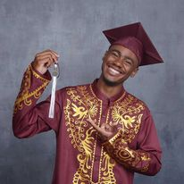
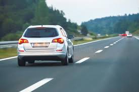

The last trip I went on was a trip to Springfield, MO. I had a cousin named Robbie that was graduating from college last year and I wanted to go see him. Two of my closest cousins Derrick and David decided they wanted to go and support him (as well as celebrate, of course). We all decided to get there a day early to hang out and then celebrate with the rest of the family after the ceremony. Then and there a road trip was born!

By no means was the trip to Sprinfield a long one (about 3hrs), but it was a fun one.
Having good company always makes the trip more enjoyable as well as faster. On the way, we stopped at a few gas stations
for breaks and food. The most note-worthy of them was called Wally's.
They had an entire wall of beef jerky as well as a small kitchen for your standard odds and ends. That gas station is the size of a small grocery store
with pumps for days!
.png)
When we made it to Springfield, its was almost a straight shot to our cousins apartment a couple blocks away from the main campus.
We decided to go to a couple kickbacks with him and his friends. After a couple hours, we ate some burgers from a Steak N Shake.
This was no ordinary Steak N Shake however! This location was special because its been around since before the 1907s! serving up steakburgers
with shoestring fries (and don't forget the shake!) for generations!
.png)
The next day was the big day! we woke up early, got dressed and headed to the Robert W Plaster Stadium. We groouped up with the rest of the family that came.
everyone watching and waiting for Robbie to walk across the stage. After, we all headed to another nearby restaurant for a banquet style meal (don't ask me to try and remember what
I ate!). Smiles and excitement filled the room for the couple of hours we were there. after, we all hugged each other and said our goodbyes and wished safe travels.
All around, it was a great road trip and I'm glad that I got to spend it with my family. Although there isnt a destination or date on the calendar just yet, Im still hype for the next one!

To Be Continued...
